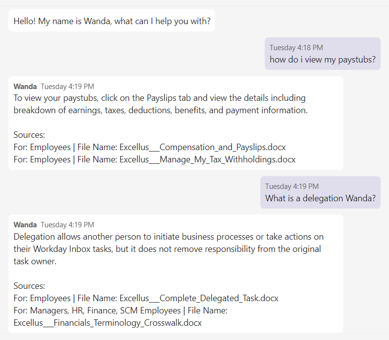
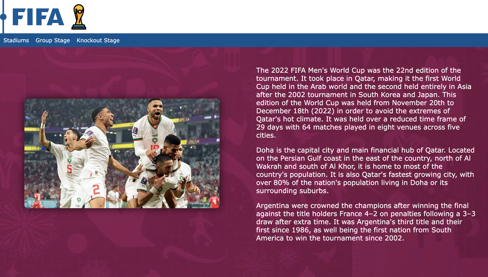

My Work
-

⊳ Enterprise-wide Strategic Project.
⊳ Machine Learning initiative creating a Q&A chatbot for the Workday software.
⊳ Application hosted in MS Teams.
⊳ Responsible for frontend development.JavaScript, REST API, Azure Databricks
"Wanda" Workday Bot
-
⊳ React.js webpage displaying RIT iSchool information.
⊳ All data is aquired via an API.
⊳ Material UI (MUI) used for implementing UI components.RIT iSchool API Website
-

⊳ Vanilla HTML, CSS, JS webpage highlighting the 2022 FIFA World Cup.
⊳ Used to display information about the stadiums and games.
⊳ Mobile Responsive.FIFA World Cup Website